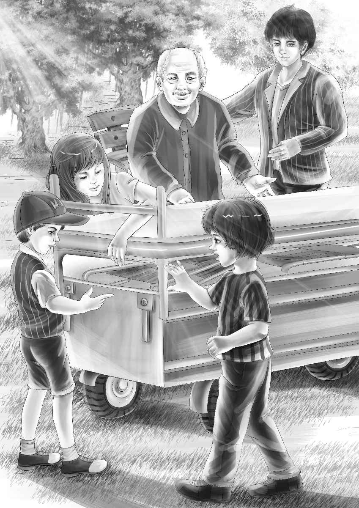

When the truck stopped at the mine office,a crowd of workmen stood waiting. The men were all smiling. Henry,Benny and Mike jumped out of the truck and helped Jessie and Violet out.
The driver helped Mrs. Wood down from the high seat. "We'll help you move these things into the building," said one man. "You tell us where you want them to go. "
Mrs. Wood and the children and the driver went in. They looked around. The dogs ran around barking.
Just then Mr. Carter came out of the office.
"Oh,Mr. Carter,hello!" said Henry. "You are just the man we want. "
"I want to see him too," said Mrs. Wood. "I want to ask him something. "
"Ask away,my lady," said Mr. Carter with a smile.
"Well," said Mrs. Wood slowly,"I can hardly wait to make a pie. And I'd love to live right here in this room with my two boys. "
"That's just what I said!" shouted Benny. "I said you've got to live somewhere,and why not here?"
"Yes,you did,Benny," agreed Mrs. Wood. "That is what gave me the idea. You see,Mr. Carter,the boys say there are watchmen up here all night. They would help me if I needed anything. And it wouldn't take long to put up some rough boards and make two rooms,would it? It would be so handy for me to start my pies early in the morning. "
"Oh,what a wonderful idea!" cried Jessie. "We can help Mrs. Wood,too,Mr. Carter. "
"Yes,I think it could be done," said Mr. Carter. "I have talked with Mr. Gardner,the big boss,Mrs. Wood. He says if I say O. K. ,he says O. K. "
"Oh,isn't this fun!" shouted Benny. "Who would put up the rough boards?"
Mr. Carter laughed. He pointed at the workmen who were bringing in the stove.
"Would they?" asked Violet softly.
"Yes,they would," said a workman who heard what Violet had said. "We have time off today. "
"Then you could make the rooms today!" shouted Mike. He never liked to wait for anything.
A workman laughed at Mike. "You'll have to help us,son," he said.
"Oh,yes,I will," said Mike. "I'll be the one to tell you where the things go. "
"That is called a boss," said the man. "Boss Mike. "
Benny said,"Mike would be a good boss. He really would. And so would I. You see,that window will make Mike's room,and the next window will be Mrs. Wood's room. Every room will have one window so that it will have plenty of light. "
"Not so bad!" said the man. "There is water in the office already. So we will just get longer pipes to go to your sink. "
What a noise there was!Men were cutting holes in the floor for the pipes. Others were pounding away at the pipes. The dogs barked and barked. Mr. Carter telephoned three times and soon some long boards arrived at the door. More men came.
"My room can be small,"said Mrs. Wood. "Just big enough for a bed. "
"Mine ought to be bigger," said Mike. "Because Pat and I will have two beds,and I want another bed for Ben. I want him to sleep up here sometimes. "
"That will be easy," said a man. "One small room,and one big one. Are you going to sleep here tonight?"
"No," said Mike. "No beds. "
"What did you say?" shouted Benny. "Look out of the window!"
Another truck had just come. A bed was sticking out of the back. It was an Army cot.
Mr. Carter ran down the steps and said a few words to the driver.
Violet thought the driver said,"I'll be back soon," but she was not sure. The driver saw the children. He called,"Come on,kids! Help me take out these things. "
The boys were delighted to help. They found some folding chairs under the cot.
"Where did these things come from?" asked Henry.
"From the neighbors," said the driver. "Everyone wants to help Mrs. Wood. These came from the store,but—. " He stopped and said,"Don't ask me any more questions. "
But Benny went right on. "What are those barrels for?"

"Two barrels of flour," said the driver.
"For pies," said Violet.
"Oh,barrels are very useful," said Benny. "Just put a board across two barrels and it makes a seat. "
"It makes a table,too," said Jessie. "Remember our table in the barn on Surprise Island?"
Soon the children sat in a row on the long board. They were all watching the rooms go up.
"This is like a ball-game," said Henry.
"It's like a race," said Benny.
Henry said,"Some day we ought to have a race. We ought to have a fair race for Watch and Spot. "
"Do you think so?" asked Mike. "Watch is a very fast runner. "
"Oh,ho!" cried Benny. "You're afraid Watch will beat again!"
"No,I am not!" cried Mike. "Spotty is a fast runner,too. "
"Now,boys,no fights!" said Henry. "Just enjoy yourselves. Who's coming now? It's a woman in a car. "
"My neighbor from the blue house!" cried Mrs. Wood. She went to the door.
"Mike,come help Mrs. Smith with that box. "
Mrs. Smith came in smiling. She shook hands with everyone. Then she said,"Mrs. Wood,all your friends want to help. They have looked over the things they can spare and everyone is giving you something. It's a Surprise Party. "
"How kind you are!" said Mrs. Wood with tears in her eyes.
"We planned to have it next week,but Mr. Carter telephoned that now is the time. So everyone is coming today. "
"Well,Mr. Carter is right," said Mrs. Wood. "This is the time I need it most. "
"There are two sheets and two blankets in that box," said Mrs. Smith. "And more are on the way. "
Another car came while she was talking. Then another and another. Soon the room was full of women with baskets and boxes. They brought everything that Mrs. Wood needed.
"Oh,oh!" said Jessie. "Isn't this fun,Violet? Look how fast the men are making shelves!"
"I'll put my pink cup on the shelf," shouted Benny.
"Look out of the window!" shouted Mike. A man was helping someone out of a car. It was Aunt Jane with her bright blue eyes and pink cheeks. She had a newspaper in her hand. Lady walked beside her.
All the children rushed over to Aunt Jane. All but Mike. He just stood and looked at the paper in her hand.